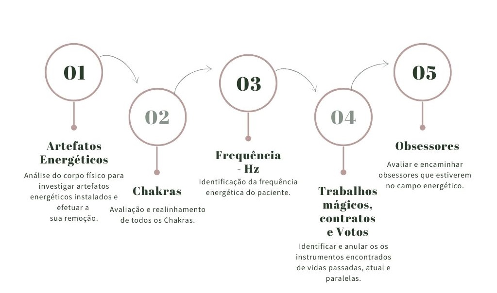

MCA
O tratamento energético com a Mesa Cristalina Arcturiana (MCA), tem o objetivo de identificar e ressignificar os bloqueios e padrões inconscientes, gerados nessa ou em encarnações anteriores, que estão afetando de forma negativa o corpo físico, mental ou emocional do paciente, interrompendo o fluxo de harmonia, prosperidade e abundância.
Indicações
- Indicado para pessoas que estão passando por situações de estresse, ansiedade e depressão
- Dificuldades nos relacionamentos afetivos
- Brigas familiares
- Problemas financeiros
- Falta de prosperidade e problemas financeiros
- Desarmonia conjugal
- Falta de energia vital
- Procrastinação
- Insatisfação profissional
- Baixa autoestima
- Doenças físicas (Ex: enxaquecas, gastrite, sinusite, dor de garganta, dores na coluna, etc)
- Doenças de fundo emocional (Ex: ansiedade, crise de pânico, obesidade, vícios, etc)
Como funciona a sessão?
A sessão é realizada à distância, com data e horário pré-agendado, tendo duração de aproximadamente 1 hora.
No horário da sessão o paciente deve estar em casa, ou em um ambiente tranquilo, deitado(a) e escutando uma música de meditação.
A técnica utilizada é a ativação de uma mesa multidimensional e durante a sessão serão realizadas:
Contato
Instagram:

WhatsApp: